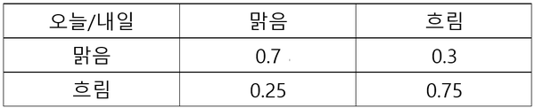

Table of Contents
- 시작
- 마르코프 체인(Markov Chain; Markov Process)
- 마르코프 체인 계산 방법
- 안정상태(Steady state)와 정적분포(Stationary distribution)
- 생각
- 이어지는 토픽
- Reference
Stable Diffusion에 대해서 공부하다보니 마르코프 체인이 나와서 살펴봐야할 것 같아 정리한 글이다.
마르코프 체인 관련된 블로그 포스팅 등 여러 글들을 참고하여 정리하였다.
시작
마르코프 체인은 ‘현재 몇 가지의 선택지가 있고, 과거 비율을 충분한 회수로 확인할 수 있다면 미래에 특정한 선택지를 고를 확률에 대해서도 표현할 수 있지 않을까’라는 고민에서 출발했다.
쇼핑몰을 운영하는 기업은 특정 조건의 고객군이 로그인 후 어떤 검색을 거쳐 장바구니에 넣고 최종 결재를 하게 되었는지, 그리고 해당 조건의 고객군이 미래에 어떠한 선택을 하게 될 것인지 궁금해할 것이고, 이는 마르코프 체인을 활용하여 풀 수 있을 것이다.
마르코프 체인(Markov Chain; Markov Process)
마르코프 체인이란 마르코프 특성(Markov Property)를 지니는 이산시간(discrete time) 확률과정(stochastic process)이라고 정의한다.
- 확률과정: 시간에 따라 “어떤 사건이 발생할 확률”이 변화하는 과정
- 마르코프 특성: 과거 상태들( $$s_1, s_2, …, s_{t-1}$$ )과 현재 상태($$s_t$$)가 주어졌을 때, 미래 상태($$s_{t+1}$$)는 과거 상태와는 독립적으로 현재 상태에 의해서만 결정되는 것을 의미한다. (혹은 일정 기간의 상태에만 영향을 받는 것)
즉, 과거와 현재 상태 모두를 고려했을 때, 미래 상태가 나타날 확률과 현재 상태만을 고려했을 때, 미래 상태가 발생할 확률이 동일하다. 이를 수식으로 표현하면 아래와 같다.
$$
P[s_{t+1}|s_{t}] = P[s_{t+1} | s_1, \cdots, s_t]
$$
마르코프 프로세스는 과거 상태를 기억하지 않기 때문에 메모리 리스(memoryless)프로세스라고 불리며, 마르코프 체인(Markov chain)이라 불리기도 한다.
어떤 상태에서 다음 단계의 상태로 변화하는 것을 변이(transition)라고 하고, 그 확률을 상태 변이확률(state transition probability)라고 한다. 시간 $t$에서의 상태를 $s$라고 하고, 시간 $t+1$에서의 상태를 $s^{‘}$이라고 할 때, 상태 변이확률은 아래 식과 같이 표현할 수 있다.
마르코프 체인 중 $$N$$차 마르코프 체인이 있는 듯하다. 이 경우를 “메모리 k 마르코프 체인”이라고도 부른다.
$$
r=0,\ P(o_t|o_{t-1}o_{t-1}\cdots o_{1}) = P(o_t) \
r=1,\ P(o_t|o_{t-1}o_{t-1}\cdots o_{1}) = P(o_t|o_{t-1}) \
r=2,\ P(o_t|o_{t-1}o_{t-1}\cdots o_{1}) = P(o_t|o_{t-1}, o_{t-1}) \
$$
$$
P_{ss^{‘}} = P[s_{t+1}=s^{‘}| s_{t}=s]
$$
마르코프 체인 계산 방법
마르코프 체인을 활용해 오늘 날씨를 통해 내일의 날씨를 확률적으로 예측하고, 다시 내일의 날씨 정보에 기반해서 모레의 날씨를 예측하는 행위를 충분히 반복했다고 가정하자. 날씨에 관한 확률의 묶음이 특정 성질을 반복할 때, 반복 계산의 어느 지점에서 날씨가 흐릴지, 비가 올지, 맑을지에 대한 확률이 특정하게 수렴하게 될 수 있다. 따라서 마르코프 체인은 오늘 흐림이라서 내일은 무조건 비가 아니라 내일도 흐릴 확률은 어느 정도인지, 혹은 맑거나 눈이 내릴 확률은 어느 정도인지 확률적으로 표현하게 된다.
문제를 간소화하여 맑음, 흐림 2가지의 조건만 활용해서 마르코프 체인을 계산해보자.

위 확률값을 상태 전이도(State Transition Diagram)로 표현하면 아래와 같다.
이는 아래와 같이 전이확률 행렬로 표현할 수 있다.
위의 전이 흐름도는 아래와 같이 행렬 곱을 통하여 계산할 수 있다. 모레의 확률 변화는 오늘과 내일의 전이가 연속되어 일어나는 경우이기 때문에 전이행렬을 곱하여 계산한다.
만약 지난 3년간 특정 일의 날씨 중 80%가 맑았다면 특정일 기준 모레가 맑을 확률은 0.8 x 0.565 + 0.2 x 0.362 = 0.524이기 때문에 52.4% 확률로 예측할 수 있게 된다.
이러한 상태에서 충분히 많은 횟수를 반복한다면 어느 순간에는 전이행렬이 변하지 않는 상태가 오는데 이를 두고 **안정상태(steady state)**라 부르고, 확률이 직전 상태와 동일하게 수렴하게 된다. 이러한 확률 분포를 **정적 분포(Stationary Distribution)**라고 부른다.
안정상태(Steady state)와 정적분포(Stationary distribution)
현재 상태를 알고 있고 전이 확률행렬을 알고 있다면, 다음 단계의 상태도 알 수 있을 것이다. 마찬가지로 다음 단계의 상태를 구했고 전이 확률행렬을 이미 알고 있으니 그다음 단계의 상태도 알 수 있을 것이다. 이를 식으로 나타내면 아래와 같다.
$$
P^{n}{ij} = [P{ij}]^{n}
$$
$P_{ij}$는 상태 $i$에서 $j$로 가는 상태전이 확률이고, $n$의 의미는 $n$번째 상태이다. 만약 $n\rightarrow \infty$라면 아래와 같은 수식이 성립한다.
$$
\pi = \pi P
$$
이때, $\pi$는 각 상태의 확률분포이고 $P$는 전이행렬이다. 이 상태에서 다음 상태를 알기 위해 전이행렬을 더 곱한다 해도 같은 값을 유지하는데, 이를 **안정상태(Steady state)**라고 하고 이때의 확률분포를 **정적분포(Stationary distribution)**라고 한다.
생각
- 토스 PO 세션에서 Carrying Capacity를 언급했는데, 마르코프 체인으로 Carrying Capacity를 측정해볼 수 있지 않을까?
- 그런데, A라는 App을 쓴 사람이 다시 해당 App을 쓸 확률(Retension Probability)은 알 수 있지만 다른 App들을 쓰다가, A라는 App을 쓸 확률(New, Resurrection Probability)은 알 수 없는 것이 문제이다.
- Inflow / Outflow / Retention 확률이 다른 변수에 의해 결정된다라고 했을 때, 마르코프 체인이 성립될 수 있나? 그 가정이 틀렸어도 마르코프 체인으로 어느정도 풀어낼 수 있나?
이어지는 토픽
- 마르코프 보상 프로세스 (Markov Reward Process) → 강화학습과 이어짐
- 마르코프 디시전 프로세스(Markov Desision Process) → 강화학습과 이어짐
- 마르코프 체인 분석(Markov Chain Analysis)
- 전이행렬을 고유값(Eigenvalue), 고유벡터(Eigenvector)로 제곱하는 방식으로 구할 수 있다. $$
P^{k} = QD^{k}Q^{-1}
$$ - Carrying Capacity와 Markov Chain을 연결지어 생각해보기
- 마르코프 체인 몬테 카를로
- 몬테카를로 시뮬레이션
Reference
- 마르코프 체인에 관하여
- [강화학습] 마코프 프로세스(=마코프 체인) 제대로 이해하기
- Markov Chain
- 마코프 체인 응용
- 마르코프 체인 | 고급수학2 | 행렬 세특
- 마르코프 연쇄
- Markov chain